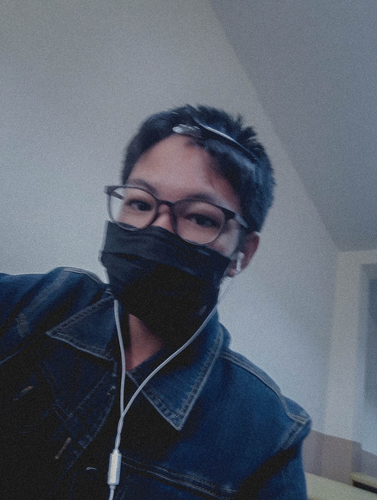

ประวัติของฉัน

รหัสนักเรียน:1469900697311 ชื่อ: นายปฏิพัทธ์ หาระมี
ชื่อเล่น:
พัทธ์ วัน/เดือน/ปีเกิด:23 เมษายน 2548 ราศี:พฤษภ
ที่อยู่:137 บ้านโคกศรี ตำบลอุ่มเม่า อำเภอยางตลาด จังหวัดกาฬสินธุ์
เบอร์โทรศัพท์:090-256-5880Line-ID:zxcvbnm.saoFacebook:Patipat
Haramee
จบระดับ:ม.3 ชื่อโรงเรียนเดิม:โรงเรียอนุกูลนารี
เข้าเรียนปีการศึกษา:2563ระดับ:ปวช.1
สาขาวิชา:เทคนิคคอมพิวเตอร์ห้อง:3
คุณครูที่ปรึกษา:คุณครูไพรบูรณ์ โพธิไสย
งานอดิเรกดูหนัง เล่นเกมส์ และชอบอ่านหนังสือเกี่ยวกับประวัติศาสตร์